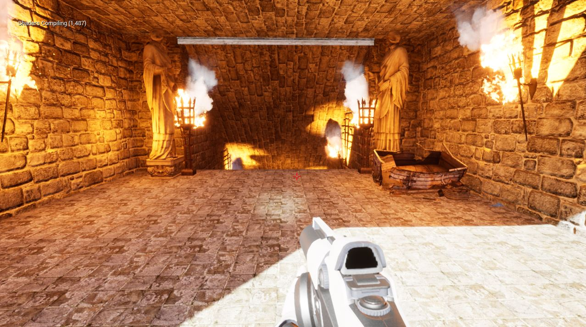

Impasta - Pizza Time
Pizza Time was another project in which I was also a project lead in a team of 6, 4 Programmers and 2 Artists. This was supposed to be a warmup in our 2nd year to prepare us mentally for the 3rd year project required for graduation so we all decided to work on something that we've never tried before and that was created a multiplayer FPS game. With the exception of materials, everything in this game was also created by the people in the team. We were also very impressed with the progress that we made in the small timeframe that we had.
More information can be found about this project here!(This will redirect you to a new page)